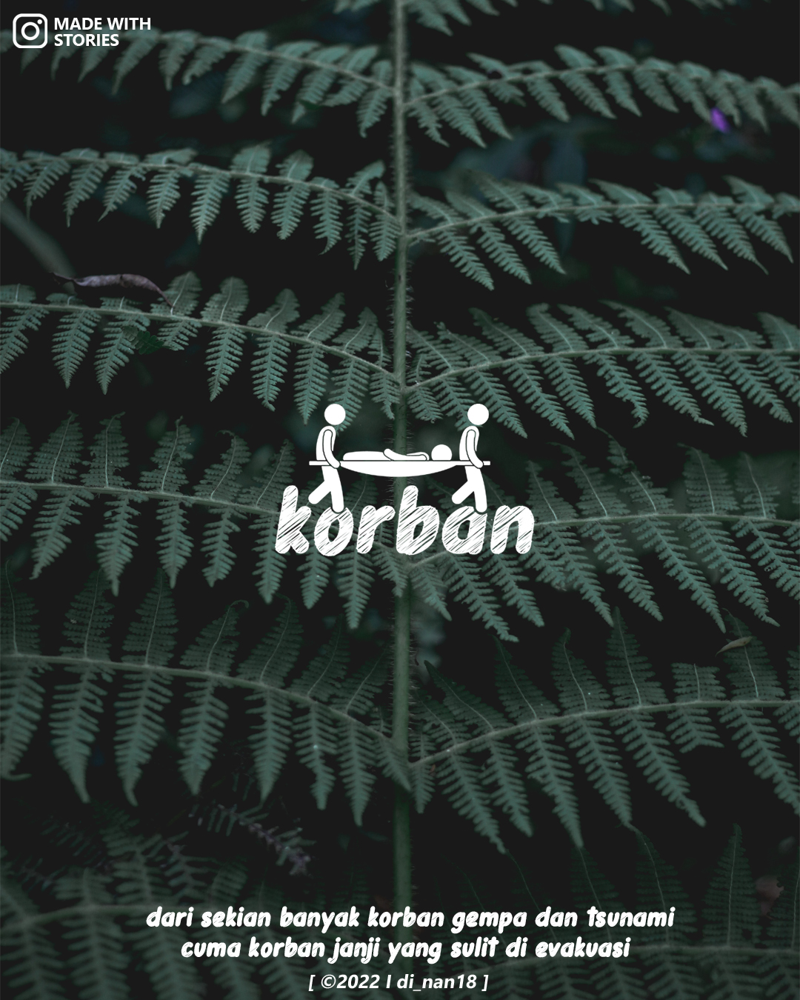
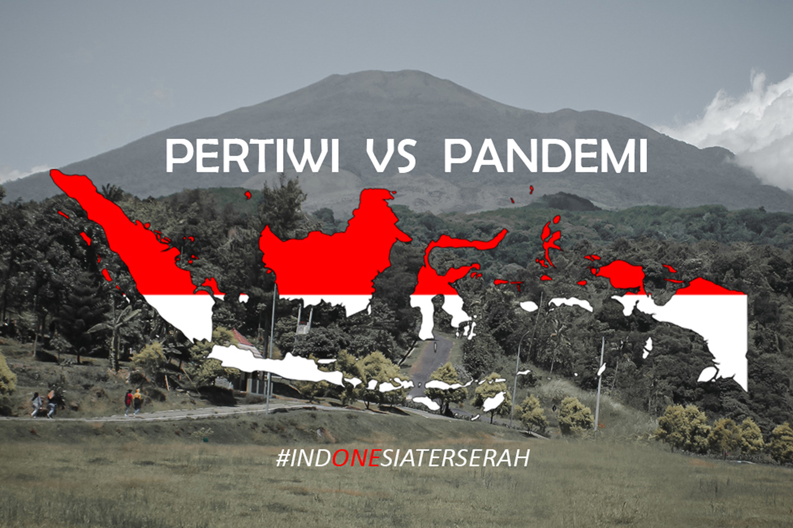
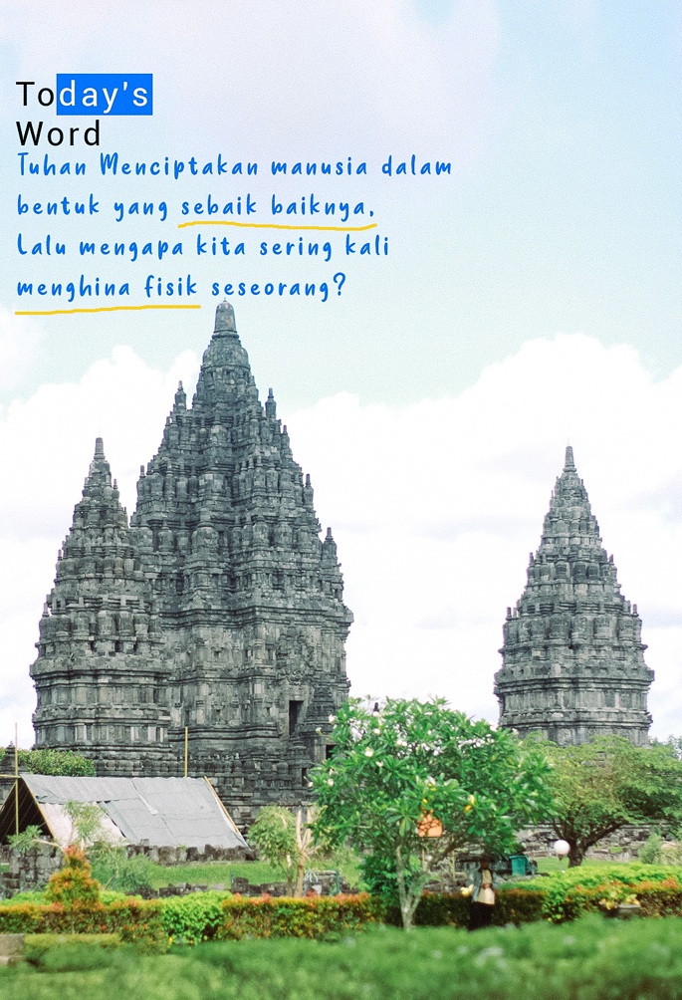

Korban Janji / Janji Korban ?
 Kita saling tatap, tapi enggan menetap wkwkwk,
Jatuh hati tidak pernah bisa memilih. Tuhan memilihkan. Kita hanyalah korban. Kecewa adalah konsekuensi, bahagia adalah bonus. - Fiersa Besari -
Tentang PERTIWI VS PANDEMI
The pandemic known as Covid-19 has been going on for one year. Last March, the first 2 cases in Indonesia were announced. Some people panicked and started preparing for a massive quarantine,some were still in disbelief, while some thought everything was going on as usual, as if there was nothing to be afraid of.
Various stories whispered around Indonesia during the pandemic. Of course, everyone hopes that this pandemic does not need another birthday. But, during this new normal, there are also new hopes and prayers, a hope that we can survive, a hope that we can fight hard, a hope that we are able to go through all this until the pandemic is over.
Today's World
Tuhan menciptakan manusia dalam bentuk yang sebaik baiknya, Lalu mengapa kita sering kali menghina fisik seseorang?
Taken At : [ Candi Prambanan, Kab. Sleman, Daerah Istimewa Yogyakarta ]